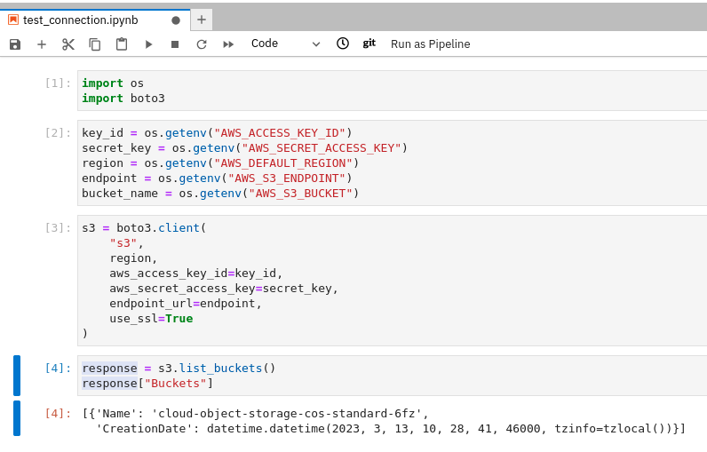
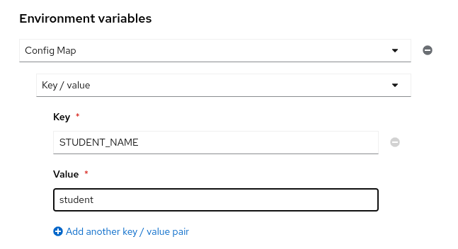
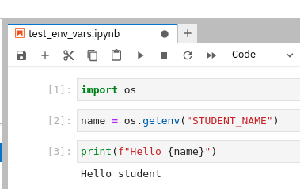

Assessment Lab: Working with Data Science Projects
In this exercise, you will practice the use of data science projects, permissions, workbenches, environment variables, and data connections.
Prerequisites
To perform this exercise, ensure that your platform meets the following conditions:
-
An S3 bucket.
-
The
data-scientistsuser group exists in OpenShift. -
The
user4anduser5users exist in OpenShift and are assigned to thedata-scientistsgroup. -
The
ocCLI installed on your computer. Alternatively, you can use the OpenShift web console.
The identity provided of your demo platform already includes these users. To create the group, log in as an administrator user in OpenShift and then apply the https://raw.githubusercontent.com/RedHatQuickCourses/rhods-qc-apps/main/1.intro/chapter2/lab/group.yaml file.
If you use the oc CLI in your computer, then you can run:
$ oc create -f \ https://raw.githubusercontent.com/RedHatQuickCourses/rhods-qc-apps/main/1.intro/chapter2/lab/group.yaml
Specifications
-
Create two data science projects as
user1:intro-projects-aandintro-projects-b. -
Create a workbench in
intro-projects-a.-
Use the
Standard Data Scienceimage. -
This workbench must be connected to the S3 bucket that is available in your demo platform.
-
Clone the https://github.com/RedHatQuickCourses/rhods-qc-apps repository in this workbench.
-
Execute the
rhods-qc-apps/1.intro/chapter2/lab/test_connection.ipynbnotebook in this workbench. This notebook contains code to verify that the connection to S3.
-
-
Create a workbench in
intro-projects-b.-
Select any image for this workbench.
-
Pass your name in the
STUDENT_NAMEenvironment variable. -
Clone the https://github.com/RedHatQuickCourses/rhods-qc-apps repository in this workbench.
-
Execute the
rhods-qc-apps/1.intro/chapter2/lab/test_env_vars.ipynbnotebook in this workbench. This notebook contains code to read the environment variable.
-
-
The
data-scientistsgroup must have edit permissions inintro-projects-a. -
Only the
user4user must have edit permissions inintro-projects-b.
Solution
-
Create the projects.
-
From your RHODS dashboard, click Data Science Projects in the left navigation pane.
-
In the Data science projects page, click Create data science project.
-
Enter
intro-projects-aas the project name and click Create. -
Repeat the same steps to create
intro-projects-b.
-
-
Create a workbench connected to S3 in
intro-projects-a.-
Navigate the
intro-projects-adashboard and click Create workbench. In the workbench creation page, enter the workbench name, select the workbench image, and the image version. -
Select Tiny as the container size and 0 GPUs.
-
In the Data connections section, select Use a data connection.
-
Enter the configuration values of your S3 connection.
-
Click Create workbench to finish the creation of the workbench and the data connection.
-
-
Verify the connection of the workbench in
intro-projects-a.-
Open the workbench of the
intro-projects-aproject. -
Log in to JupyterLab and accept the access form.
-
Clone the https://github.com/RedHatQuickCourses/rhods-qc-apps repository.
-
Navigate to
rhods-qc-apps/1.intro/chapter2/laband run thetest_connection.ipynbnotebook. You should see the buckets available in S3.
-
-
Create a workbench that receives the
STUDENT_NAMEenvironment variable inintro-projects-b.-
Navigate the
intro-projects-bdashboard and click Create workbench. In the workbench creation page, enter the workbench name, select the workbench image, and the image version. -
Select Tiny as the container size and 0 GPUs.
-
In the Environment variables section, click Add variable.
-
Select Config Map as the environment variable type. Then select Key/value.
-
Enter
STUDENT_NAMEas the key, and your name as the value. -
Click Create workbench to finish the creation of the workbench and the data connection.
-
-
Verify the variable injected in the workbench in
intro-projects-b.-
Open the workbench of the
intro-projects-bproject. -
Log in to JupyterLab and accept the access form.
-
Clone the https://github.com/RedHatQuickCourses/rhods-qc-apps repository.
-
Navigate to
rhods-qc-apps/1.intro/chapter2/laband run thetest_env_vars.ipynbnotebook. You should see a hello message that includes your name.
-
-
Set the project permissions of
intro-projects-a.-
Navigate the
intro-projects-adashboard and click Permissions. -
Click Add group and enter
data-scientistsas the group name. Verify that the Permission selector is set to Edit and click the ✓ button. -
Log out and log back in with both
user4anduser5users. Verify that both users have access to theintro-projects-aproject.
-
-
Set the project permissions of
intro-projects-b.-
Log out and log back in as
user1. -
Navigate the
intro-projects-bdashboard and click Permissions. -
Click Add user and enter
user4as the username. Verify that the Permission selector is set to Edit and click the ✓ button. -
Log out and log back in with both
user4anduser5users. Verify thatuser4can access theintro-projects-bproject. Next, verify thatuser5cannot access theintro-projects-bproject.
-